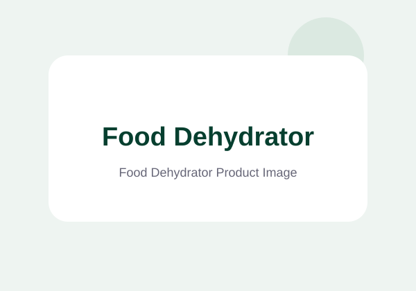
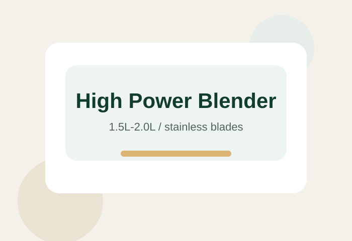

Main Products
Kitchen appliances and kitchenware with private label support.

Food Dehydrator
Multiple tray options, adjustable temperature, suitable for fruits, meat, herbs and snacks.
- 6 / 10 / 12 / 16 / 20 Trays
- Stainless Steel / Plastic
- OEM Logo & Packaging

Electric Juicer
High juice yield, easy to clean, ideal for home and commercial use.
- Slow Juicer / Centrifugal Juicer
- BPA Free Materials
- Custom Color Available

Blender
Powerful motor, multi-speed control, perfect for smoothies, soups and more.
- 1.5L / 2L Capacity
- Stainless Steel Blades
- CE / CB / GS Available
Knife Sharpener
Fast and safe sharpening for different types of kitchen knives.
- 2 Stage / 3 Stage / 4 Stage
- Non-slip Base
- OEM Packaging
Cutting Board
Durable and eco-friendly cutting boards for kitchen daily use.
- Bamboo / PP / Wheat Straw
- Multiple Sizes
- Food Grade Material